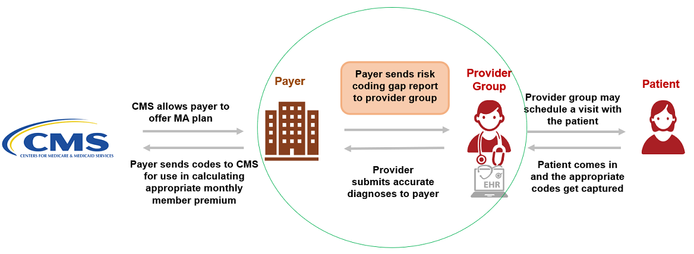

Da Vinci Risk Adjustment Implementation Guide
3.0.0-ballot - STU 3.0.0-ballot

Da Vinci Risk Adjustment Implementation Guide
3.0.0-ballot - STU 3.0.0-ballot

Da Vinci Risk Adjustment Implementation Guide - Local Development build (v3.0.0-ballot) built by the FHIR (HL7® FHIR® Standard) Build Tools. See the Directory of published versions
| Page standards status: Informative |
The Da Vinci Project member organizations have identified the need of standardizing how risk adjustment coding gaps are communicated between payers and providers. This implementation guide (IG) specifies standardized risk adjustment coding gap reports and provides guidance to query the coding gap reports from a Payer for one or more patients. Standardizing the reporting structure helps lessen the burden on the providers in processing the reports so they can more easily address the patients’ care needs. This standardized structure also supports the Payer sharing information that they have but the providers may not, such as data from other providers’ claims, lab results, filled prescriptions, etc.
This IG also provides mechanisms enabling the feedback loop from Provider to Payer. Providers may add a Condition Category Remark(s) to the Risk Adjustment Coding Gap Report to indicate that they took some action(s) for a specific coding gap on the report and communicates that back to the Payer. However, if the Provider identifies a coding gap that is on the report needs to be closed or invalidated based on medical record review, this feedback process is done using the Risk Adjustment Data Exchange MeasureReport, which allows the Provider to send the supporting clinical evaluation evidence to the Payer. This feedback loop is important for achieving the goal of improving the accuracy and completeness of risk adjustment.
Health risk is a combination of two factors, loss and probability. Many players in the healthcare industry need to measure and manage health risks. For example, providers need to know which patients in their panel are facing the greatest clinical risks to prioritize their care; insurance payers need to know the expected financial risk of their covered lives so they can price their premiums appropriately.
Risk adjustment models are used to compare and normalize health risks across groups or populations. For instance, the Medicare Advantage (MA) population represents a risk pool, as does the subset of the MA population that Payer X covers. One common use of risk adjustment is to make equitable comparisons among healthcare payers that take into account the health status of their enrolled members, to provide adequate financial support for treating individuals with higher-than-average health needs, and to minimize incentives for plans and providers to selectively enroll healthier members. Risk adjustment models determine whether Payer X’s risk pool represents more or less health risk than the MA population average, so that if Payer X is running a greater risk – say, because its risk pool includes a greater portion of economically disadvantaged persons – then appropriate payments are made to help ensure that these members' premiums are subsidized to offset the higher expected cost of claims that Payer X will incur. Risk adjustment is used for this purpose within Medicare (the CMS-HCC1 and CMS-RxHCC1 models), Medicaid (the CDPS1 and MRX1 models), the Affordable Care Act (the HSS-HCC and RXC1 models), as well as other health insurance programs.
Risk prediction models have a different intent. These are used to predict the future behavior of individuals or populations such as who is likely to be a high utilizer of healthcare services or who is likely to experience adverse health care events.
This IG has mainly focused on the Medicare Advantage risk adjustment models, but it should also work for other risk adjustment and prediction models as long as they structure their data using Condition Categories (CCs). A Condition Category (CC) is a clinically or financially related grouping of medical conditions. The number of Condition Categories (CCs) in each risk model depends on the purpose of that model, from about 80 Condition Categories (CCs) in the CMS-HCC model to about 400 Condition Categories (CCs) in the DxCG1 model. It is very common for Condition Categories (CCs) to be organized in terms of disease hierarchies and disease categories, with the former denoting the severity of a disease and the latter indicating other aspects such as which system and/or part of the anatomy is affected, how the disease affects the body, the nature of the disease process, what causes it, how it spreads, how quickly it progresses and so forth. When a disease hierarchy is applied it assigns Condition Categories (CCs) into Hierarchical Condition Categories (HCCs) with less severe HCCs superseded (dropped) if evidence of higher severity HCCs is present. Since different HCCs have an impact upon total risk assessment, they should be maintained. For example, the combination of a new diagnosis of major depression to an existing diagnosis of non-insulin dependent diabetes may increase total risk by more than the sum of the individual category risk assignments.
This IG focuses on risk adjustment for revenue normalization, but risk adjustment has several other applications. Quality measures such as Plan All-Cause Readmissions, Acute Hospital Utilization, Hospitalization Following Discharge from a Skilled Nursing Facility, Emergency Department Utilization and Hospitalization for Potentially Preventable Complications are all risk-adjusted. Risk adjustment is used in care management to identify future high-cost or high-utilizing individuals, direct them toward appropriate treatment options, allocate resources for that treatment, and evaluate the outcomes of those programs. Risk adjustment is also used as an analytical method by actuaries and underwriters for pricing purposes. However, the goals, processes and methods of these other risk adjustment applications are quite different from those of risk adjustment for revenue normalization and are outside the scope of this IG.
Unless otherwise specified, when the term “risk adjustment” is used in this IG it is limited to risk adjustment for revenue normalization and is exclusively concerned with the exchange of diagnostic data to resolve Condition Category (CC) or HCC gaps.
There are several important time periods to keep track of here. For example, the Medicare Advantage clinical evaluation period runs from January 1 of [PY-1] through December 31 of [PY-1] during which the patient may have an encounter(s) with the provider(s) to document the presence of disease(s). The date of service for the extracted diagnosis must correspond to the correct Payment Year but payers are generally permitted more than one calendar year to collect the diagnoses. The Medicare Advantage data collection period1 runs from January 1 [PY-1] to the end of January [PY+1]; during this time the payer may submit diagnoses collected during the clinical evaluation period to CMS. PY denotes the Payment Year, or the year when the payer receives its payment adjustment from Medicare. These payments begin on January 1 of [PY] based on diagnoses submitted to CMS through the first week of September of [PY-1]. This is a particularly important date known as the September Sweeps. For financial reasons, payers want to submit as many diagnoses as they can prior to September Sweeps because these are used to set the amount for the initial payment adjustments. Payers sometimes offer providers “Early Bird” incentives to document HCCs as soon in the year as they can, preferably prior to September Sweeps. For this reason, it is important for the payer to record when they receive medical evidence that closes an HCC gap so the provider can receive any “Early Bird” incentives they may have earned.
For example, during Medicare Advantage PY 2022 diagnoses are accepted from patient encounters with dates of service during the clinical evaluation period of Jan 1, 2021 to Dec 31, 2021. Payers may submit to Medicare the diagnoses they collect from these encounters as soon as Jan 1, 2021 and continuing through the end of Jan 2023. Sweeps for PY 2022 occur at the end of the first week of Sep 2021. Payers begin receiving payment adjustments from Medicare beginning in Jan 2022 based on diagnoses received through Sweeps.
The risk adjustment activities in support of these payment cycles concurrently overlap during any given year, as shown in the Figure 1-1. Note that this figure shows the Medicare Advantage risk adjustment cadence; other programs such as Medicaid and the ACA follow a different annual risk adjustment cadence.

Since the data collection period is always longer than the clinical evaluation period there will be multiple models actively collecting data at the same time. For example, during the calendar year 2022 a typical MA payer will be actively collecting data to close gaps from several models:
To avoid confusion, the provider supplies dates for the clinical evaluation period, which is driven by dates of service. So if the provider sets the clinical evaluation period to run from Jan 1, 2022 through Dec 31, 2022, the payer would only report Condition Category (CC) gaps from these models:
What’s going on with these three different model versions? There are three answers.
After careful review with the risk adjustment subject matter experts, it was determined that the most challenging aspect of the current risk adjustment process was the inconsistent manner in which reports on risk adjustment coding gaps were communicated between a provider (or system operating on their behalf) and a payer (or system operating on the payer’s behalf). Figure 1-2 shows a high-level example of the risk adjustment workflow in a CMS Medicare Advantage program. This implementation guide focuses on specifying a standard exchange format, the Risk Adjustment Coding Gap Report, between payers and providers. This diagram does not depict preceding steps such as the payer receiving clinical or claims data from providers or other sources, nor does it attempt to define contractual relationships.

This implementation guide does not define how payers determine a coding gap and how coding gaps are produced or managed on the payer side including hierarchies. This implementation guide also does not define suspecting processes and algorithms/predictive models that are used for suspecting analytics.
Different entities can play different Roles in different scenarios. The Actors in this implementation guide are Payer and Provider. Their roles as Client and Server are described below.
Client:
Server:
The Methodology section of this implementation guide describes these Actors in more detail in the context of report generation, report query, and data submission steps of risk adjustment lifecycle and adding of Condition Category remarks to the Risk Adjustment Coding Gap report.
IG © 2021+ HL7 International / Clinical Quality Information.
Package hl7.fhir.us.davinci-ra#3.0.0-ballot based on FHIR 4.0.1.
Generated
2026-03-08
Links: Table of Contents |
QA Report
| Version History |
 |
Propose a change
|
Propose a change